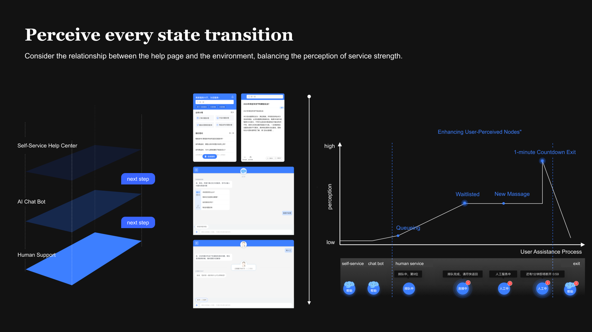
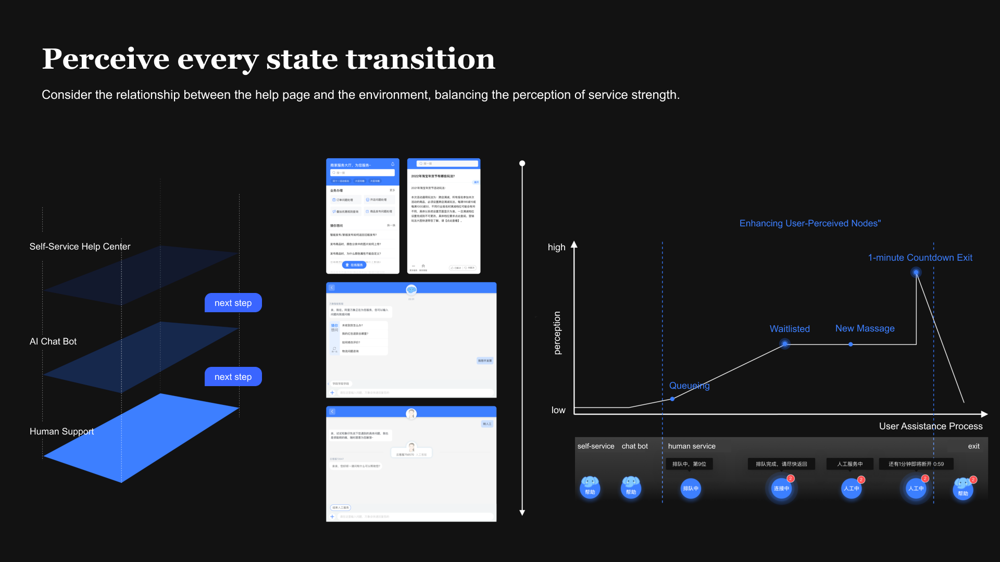
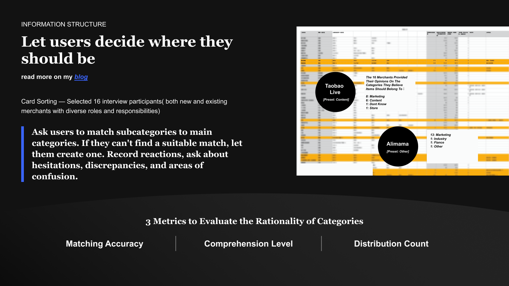
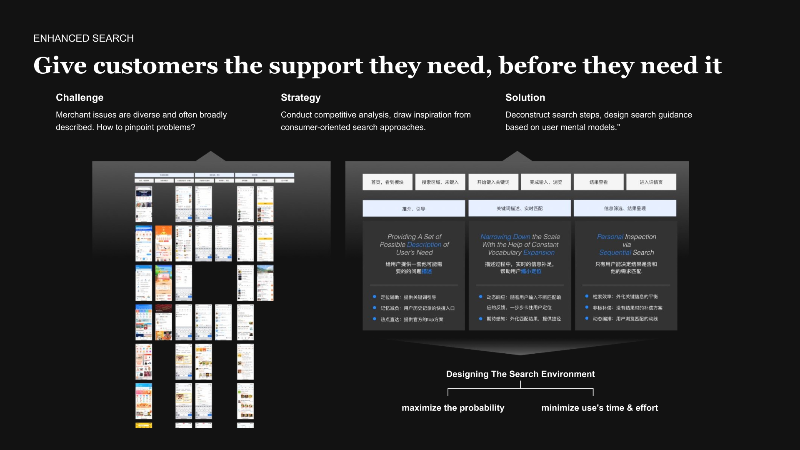
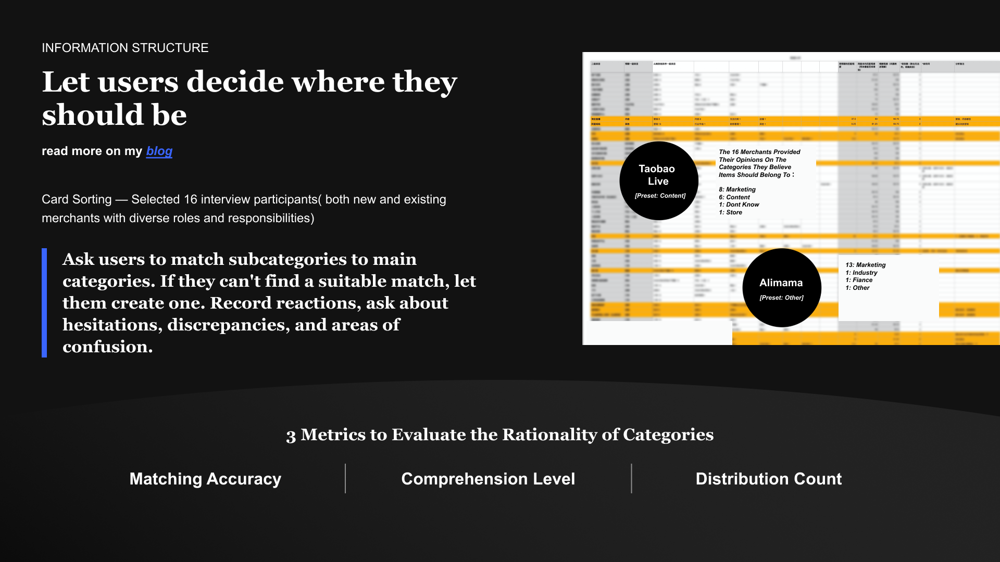
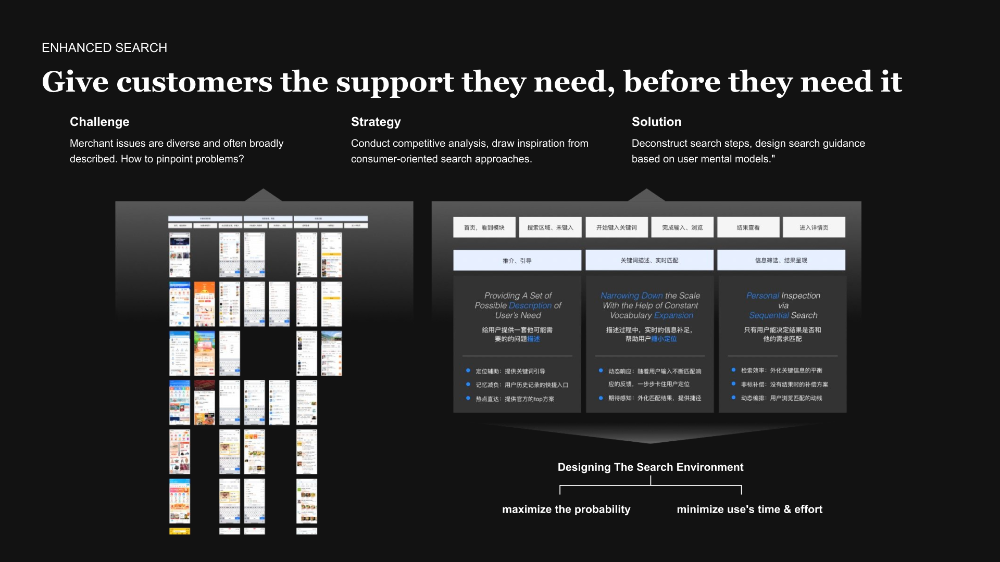

Chatbot, Help Center, and Agent Workspace Modules

I designed key components of Taobao’s merchant-facing customer service ecosystem, supporting 200,000 daily inquiries on China’s largest e-commerce platform.

The project consists of two major product surfaces:
The shared goal was to reduce support load while helping merchants resolve operational issues quickly and accurately.


Role: Lead Designer (sole designer responsible for this entire track) Merchants often face operational, policy, and fulfillment questions that are more complex than consumer inquiries. I designed a complete self-service experience that allows sellers to diagnose and resolve issues without relying on human agents.
I independently designed the full Chatbot solution, including:
Message components, reply buttons, action shortcuts for faster task completion
 


 



As a self-initiated exploration, I collaborated with a designer friend, a product friend, and an algorithm friend to prototype a lightweight tone-customization plugin for the Chatbot, aiming to let NLP and CS operations teams adjust the AI assistant's communication style for different merchant profiles and service scenarios. The concept centered on two simple but high-impact ideas —
creating an experience that felt intuitive, controllable, and easy to operationalize. The prototype was well-received by the NLP team and later informed broader discussions around personalized AI response generation.
Agent Workspace is a large mission-critical internal tool. I contributed to several high-impact modules that directly shape the daily workflow of customer service agents.
I designed the intelligent features inside the chat handling area:
This module reduces response time and improves consistency across agents.
I owned key flows within the ticketing system:
My design approach focused on balancing complexity, scalability, and clarity within a high-volume customer service environment. I grounded the work in three principles:
I treated the merchant Chatbot, Help Center, and Agent Workspace as a unified service ecosystem rather than isolated features. Every design decision—IA, flows, response logic, or UI patterns—was evaluated for cross-end consistency and long-term scalability.
Merchant issues can involve tools, policies, logistics, and platform rules. I designed both the Chatbot and Workspace flows around progressive disclosure, revealing information step-by-step to keep users focused and avoid overwhelming them.
Whether on the merchant side or agent side, automation and AI suggestions were intentionally embedded as supportive guidance, not as disruptive intervention. The goal was to empower users—merchants and agents—to act more confidently and faster with context-aware assistance. This approach enabled the entire service system to feel coherent, intuitive, and operationally efficient across very different user groups.